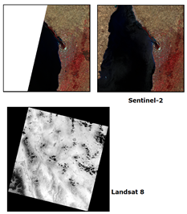

| Landsat 5 and 7 | Landsat 8 and Landsat 9 | Sentinel-2 | |
| Bands: Tradeoffs and comparison | 7 | 8 | 13 (3 red edge bands have some vegetation, and chlorphyl in the ocean, applications) |
| Thermal bands | 1 | 2 (band 10 generally better) | none |
| Swath width | 185 km | 185 km | 290 km |
| Inclination (angle orbit crosses equator) | 98.22 | 98.56 | |
| Best spatial resolution | 15 m pan (7 only), 30 m MSI | 15 m pan, 30 m MSI | 10 m for 4 bands |
| Revisit time | 16 days for each satellite; 8 days with both satellites active | 10 days per satellite, 5 days for the constellation with 2 satellites | |
| Coverage limits | 81.8 S to 81.8N | systematic coverage: 56S to 84 N on request to 84S |
|
| Recorded data: | 8 bit DN | 16 bit DN, which can be linearly scaled to TOA radiance or reflectance using constants in metadata | 16 bit DN, which can be converted to TOA reflectance by dividing by 10000 |
 |
Sentinel-2 scenes come in 100 km tiles, named for the UTM 100k
squares which have a two letter designation in the MGRS system.
Since the swath width of the sensor is 290 km, each day's pass will be
in multliple (3-4) tiles. The two images here show scenes before and
after fires in southern Australia. On the scene to the left, post
fire, the western part of the tile was not imaged in this orbit. The earlier
image, before the fires, completely covered this tile For Landsat, each pass of the satellite (call a path) is broken in rows which are approximately square but rotated by the inclination of the orbit. For both systems, the compressed files for each scene are arbout 1GB, and decompress to about 2 GB. |
Last revision 2/13/2022